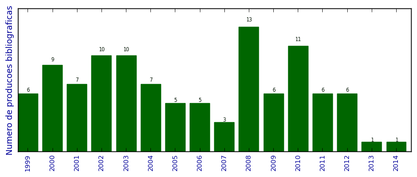

UFSM - Análise do Lattes
Total de produção bibliográfica

Número total de itens: 106
2014
| 1. | Manzoni de Oliveira, Gelson ; TIRLONI, BARBARA ; Schulz Lang, Ernesto ; Piquini, Paulo Cesar ; HORNER, MANFREDO. Synthesis, crystal structure, and optical characteristics of [Pd2Hg4Cl6{Te(DMB)}6] 2DMF, [HgClTe(DMB)]4, and the ring-forming cluster [Pd12(TePh)24] 2DMF. New Journal of Chemistry (1987). 2014.  [ citações Google Scholar | citações Microsoft Acadêmico | busca Google ] |
2013
| 1. | Back, Davi Fernando ; OLIVEIRA, GELSON MANZONI DE ; ROMAN, DAIANE ; BALLIN, MARCO AURÉLIO ; KOBER, ROGER ; Piquini, Paulo Cesar. Synthesis of symmetric N,O-donor ligands derived from Pyridoxal (vitamin B6): DFT studies and structural features of their binuclear chelate complexes with the oxofilic uranyl and vanadyl(V) cations. Inorganica Chimica Acta (Testo stampato). 2013. [ citações Google Scholar | citações Microsoft Acadêmico | busca Google ] |
2012
| 1. | Back, Davi Fernando ; Kopp, Cristiéli Rossini ; Manzoni de Oliveira, Gelson ; Piquini, Paulo Cesar. New oxidovanadium(V) complexes of the cation [VO]3+: Synthesis, structural characterization and DFT studies. Polyhedron. v. 36, p. 21-29, 2012. [ citações Google Scholar | citações Microsoft Acadêmico | busca Google ] Qualis: B2 |
| 2. | Cargnelutti, Roberta ; Schulz Lang, Ernesto ; Manzoni de Oliveira, Gelson ; Piquini, Paulo Cesar. Synthesis, structural and optical studies of several new ditelluroether iodides. Polyhedron. v. 39, p. 106-112, 2012. [ citações Google Scholar | citações Microsoft Acadêmico | busca Google ] Qualis: B2 |
| 3. | dos Santos, Cla udia L. ; Piquini, Paulo. Electronic and structural properties of InAs/InP core/shell nanowires: A first principles study. Journal of Applied Physics. v. 111, p. 054315, 2012. [ citações Google Scholar | citações Microsoft Acadêmico | busca Google ] Qualis: B2 |
| 4. | Piotrowski, Maurício J. ; Piquini, Paulo ; Zeng, Zhenhua ; Da Silva, Juarez L. F.. Adsorption of NO on the Rh , Pd , Ir , and Pt Clusters: A Density Functional Theory Investigation. Journal of Physical Chemistry. C. (Online). v. 116, p. 20540-20549, 2012. [ citações Google Scholar | citações Microsoft Acadêmico | busca Google ] Qualis: C |
| 5. | Piotrowski, Maurício Jeomar ; Piquini, Paulo Cesar ; Da Silva, Juarez. Platinum-Based Nanoalloys Pt n TM 55 n (TM = Co, Rh, Au): A Density Functional Theory Investigation. Journal of Physical Chemistry. C. (Online). v. 116, p. 18432-18439, 2012. [ citações Google Scholar | citações Microsoft Acadêmico | busca Google ] Qualis: C |
| 6. | Stieler, Rafael ; Burrow, Robert A. ; Piquini, Paulo ; Lang, Ernesto S.. Building Hg(II)/Cu(I) multinuclear compounds from mercury bis(phenylselenolate). Journal of Organometallic Chemistry (Print). v. 703, p. 9-15, 2012. [ citações Google Scholar | citações Microsoft Acadêmico | busca Google ] Qualis: C |
2011
| 1. | ANVERSA, J. ; PIQUINI, P.. The effects of an explicit water environment on the interaction of a single wall carbon nanotube with amino acids: a theoretical study. Chemical Physics Letters (Print). v. 518, p. 81-86, 2011. [ citações Google Scholar | citações Microsoft Acadêmico | busca Google ] Qualis: B2 |
| 2. | dos Santos CL ; SCHMIDT, T. M. ; Piquini, Paulo. On the p-type character of Cd and Zn doped InAs nanowires. Nanotechnology (Bristol. Print). v. 22, p. 265203, 2011. [ citações Google Scholar | citações Microsoft Acadêmico | busca Google ] Qualis: B2 |
| 3. | Machado, M ; Kar, T ; Piquini, P. The influence of the stacking orientation of C and BN stripes in the structure, energetics, and electronic properties of BC N nanotubes. Nanotechnology (Bristol. Print). v. 22, p. 205706, 2011. [ citações Google Scholar | citações Microsoft Acadêmico | busca Google ] Qualis: B2 |
| 4. | Piotrowski, Mauri?cio J. ; Piquini, Paulo ; Odashima, Mariana M. ; Da Silva, Juarez L. F.. Transition-metal 13-atom clusters assessed with solid and surface-biased functionals. The Journal of Chemical Physics. v. 134, p. 134105, 2011. [ citações Google Scholar | citações Microsoft Acadêmico | busca Google ] Qualis: B2 |
| 5. | Piotrowski, Maurício J. ; Piquini, Paulo ; Cândido, Ladir ; Da Silva, Juarez L. F.. The role of electron localization in the atomic structure of transition-metal 13-atom clusters: the example of Co13, Rh13, and Hf13. PCCP. Physical Chemistry Chemical Physics (Print). v. 13, p. 17242, 2011. [ citações Google Scholar | citações Microsoft Acadêmico | busca Google ] Qualis: C |
| 6. | Schwab R.S. ; Singh D. ; Alberto E.E. ; Piquini, P ; Rodrigues O.E.D. ; Braga A.L.. C-S cross-coupling of thiols with aryl iodides under ligand-free conditions using nano cooper oxide as a recyclable catalyst in ionic liquid. Catalysis Science Technology. v. 1, p. 569-573, 2011. [ citações Google Scholar | citações Microsoft Acadêmico | busca Google ] Qualis: C (Catalysis Science & Technology) |
2010
| 1. | da Silva, Antônio J. R. ; PIQUINI, P. ; ARANTES, J. T. ; BAIERLE, R. J. ; FAZZIO, A.. Mn-doped cubic BN as an atomiclike memory device: A density functional study. Physical Review. B, Condensed Matter and Materials Physics. v. 81, p. 195432-1-195432-5, 2010. [ citações Google Scholar | citações Microsoft Acadêmico | busca Google ] Qualis: C |
| 2. | de Almeida, James M. ; KAR, Tapas ; Piquini, Paulo. AlN, GaN, AlxGa1?xN nanotubes and GaN/AlxGa1?xN nanotube heterojunctions. Physics Letters. A (Print). v. 374, p. 877-881, 2010. [ citações Google Scholar | citações Microsoft Acadêmico | busca Google ] Qualis: B2 |
| 3. | dos Santos, Cla?udia L. ; Piquini, Paulo ; Lima, Erika N. ; Schmidt, Tome M.. Low hole effective mass in thin InAs nanowires. Applied Physics Letters. v. 96, p. 043111, 2010. [ citações Google Scholar | citações Microsoft Acadêmico | busca Google ] Qualis: C |
| 4. | dos Santos, Cláudia L. ; Piquini, Paulo. Diameter dependence of mechanical, electronic, and structural properties of InAs and InP nanowires: A first-principles study. Physical Review. B, Condensed Matter and Materials Physics. v. 81, p. 075408, 2010. [ citações Google Scholar | citações Microsoft Acadêmico | busca Google ] Qualis: C |
| 5. | PIOTROVSKI, M. ; Da Silva, J.L.F ; PIQUINI, P.. Density functional theory investigation of 3d, 4d, and 5d 13-atoms clusters. 2010. Apresentação de Trabalho/Comunicação |
| 6. | PIOTROVSKI, M. ; Da Silva, J.L.F ; Piquini, Paulo. A Density Functional Theory Investigation of the 3d, 4d, and 5d Metal 13-atoms Clusters. Em: XXXIII Encontro Nacional de Física da Matéria Condensada, 2010, Aguas de Lindoia. Anais do Evento, v. 1, 2010. [ citações Google Scholar | citações Microsoft Acadêmico | busca Google ] |
| 7. | Piotrowski, Maurício J. ; Piquini, Paulo ; Da Silva, J.L.F. Density functional theory investigation of 3d , 4d , and 5d 13-atom metal clusters. Physical Review. B, Condensed Matter and Materials Physics. v. 81, p. 155446, 2010. [ citações Google Scholar | citações Microsoft Acadêmico | busca Google ] Qualis: C |
| 8. | PIQUINI, P. ; PIOTROVSKI, M. ; Da Silva, J.L.F. 3d, 4d, and 5d transition metal clusters: the case of 13 atoms. 2010. Apresentação de Trabalho/Simpósio |
| 9. | Piquini, Paulo ; SILVA, C. A. M. ; Palandi, J. ; Betz, M.. Mecânica Quântica de Schrodinger. Em: UFSC, UDESC, UEM, UFRGS, UFSM. (Org.). Estrutura da Matéria I. 1ed.Florianópolis. 2010.v. 1, p. 151-179. [ citações Google Scholar | citações Microsoft Acadêmico | busca Google ] |
| 10. | Piquini, Paulo ; SILVA, C. A. M. ; Palandi, J. ; Betz, M.. Potenciais Unidimensionais. Em: UFSC, UDESC, UEM, UFRGS, UFSM. (Org.). Estrutura da Matéria I. 1ed.Florianópolis. 2010.v. 1, p. 181-210. [ citações Google Scholar | citações Microsoft Acadêmico | busca Google ] |
| 11. | Stieler R. ; Bublitz F. ; Burrow R. A. ; de Oliveira G. N. M. ; Villetti M. A. ; Pereira, M. B. ; Lang, E. ; Piquini, Paulo. Synthesis and characterization of [Cd8Cl2Se(SePh)12(PCy3)2]Â 2.5CH3OH. Journal of the Brazilian Chemical Society (Impresso). v. 21, p. 2146-2153, 2010. [ citações Google Scholar | citações Microsoft Acadêmico | busca Google ] Qualis: B3 |
2009
| 1. | A Zunger ; PIQUINI, P.. APS March Meeting. 2009. Apresentação de Trabalho/Congresso |
| 2. | ANVERSA, J. ; PIQUINI, P.. First principles study of a polar solvent environment on the interaction of polar and non-polar aminoacids with carbon nanotubes. Em: XXXII Encontro Nacional de Física da Matéria Condensada, 2009, Águas de Lindóia. Livro de Resumos. São Paulo: Sociedade Brasileira de Física, v. 1, p. 237-237, 2009. [ citações Google Scholar | citações Microsoft Acadêmico | busca Google ] |
| 3. | dos Santos CL ; PIQUINI, P.. Size-dependence of the structural, electronic and mechanical properties of InAs and InP nanowires: A first principles calculation. Em: XXXII Encontro Nacional de Física da Matéria Condensada, 2009, Águas de Lindóia. Livro de Resumos. São Paulo: Sociedade Brasileira de Física, v. 1, p. 238-238, 2009. [ citações Google Scholar | citações Microsoft Acadêmico | busca Google ] |
| 4. | MACHADO, Marcelo Pereira ; PIQUINI, P. ; Larkin I.A.. Electronic and structural properties of two mirrored boron-nitride nanocones with 240º disclination. Brazilian Journal of Physics (Impresso). v. 39, p. 239-241, 2009. [ citações Google Scholar | citações Microsoft Acadêmico | busca Google ] Qualis: B4 |
| 5. | PIOTROVSKI, M. ; Da Silva, J.L.F ; PIQUINI, P.. CO Adsorption on Rh, Pd, Nanocatalysts: a DFT Investigation. Em: CO Adsorption on Rh, Pd, Nanocatalysts: a DFT Investigation, 2009, Santo Andre. Anais do evento, v. 1, 2009. [ citações Google Scholar | citações Microsoft Acadêmico | busca Google ] |
| 6. | PIOTROVSKI, M. ; Piotrowski, Maurício J. ; Da Silva, J.L.F ; Piquini, Paulo. Atomic Structure of Rh, Pd, and Pt 13-atoms Clusters. Em: XXXII Encontro Nacional de Física da Matéria Condensada, 2009, Aguas de Lindoia. Anais do evento, v. 1, 2009. [ citações Google Scholar | citações Microsoft Acadêmico | busca Google ] |
2008
| 1. | ALMEIDA, James Moraes de ; PIQUINI, P.. Nanotubos de GaN/AlN. 2008. Apresentação de Trabalho/Congresso |
| 2. | ALMEIDA, James Moraes de ; Piquini, Paulo. Nanotubos de GaN/AlN. Em: XXXI Encontro Nacional de Física da Matéria Condensada, 2008, Águas de Lindóia. Livro de Resumos do XXXI ENFMC. São Paulo: Sociedade Brasileira de Física, v. 1, 2008. [ citações Google Scholar | citações Microsoft Acadêmico | busca Google ] |
| 3. | dos Santos CL ; Piquini, Paulo. Propriedades eletrônicas de nanofios de InAs e InP e heterojunções de nanofios de InAs/InP. 2008. Apresentação de Trabalho/Congresso |
| 4. | dos Santos CL ; Piquini, Paulo. Propriedades mecanicas de nanofios de InAs e InP e heterojunções de nanofios de InAs/InP. 2008. Apresentação de Trabalho/Outra |
| 5. | dos Santos, Cláudia L. ; SCHMIDT, T. M. ; Piquini, Paulo. Propriedades eletrônicas de nanofios de InAs e InP e heterojunções de nanofios de InAs/InP. Em: XXXI Encontro Nacional de Física da Matéria Condensada, 2008, Aguas de Lindoia. Anais do Evento, v. 1, 2008. [ citações Google Scholar | citações Microsoft Acadêmico | busca Google ] |
| 6. | GUERINI, Silvete ; MIWA, R. H. ; SCHMIDT, T. M. ; PIQUINI, P.. Theoretical investigation of the hBN(0001)/cBN(111) interface. Diamond and Related Materials. v. 17, p. 1963-1968, 2008. [ citações Google Scholar | citações Microsoft Acadêmico | busca Google ] Qualis: B2 |
| 7. | Liu Z ; PIQUINI, P. ; A Zunger. First-principles epitaxial phase-diagram, short-range order, microstructure and electronic properties of (In,Ga)N zincblende alloys on GaN. 2008. Apresentação de Trabalho/Congresso |
| 8. | PIOTROVSKI, M. ; Piquini, Paulo. Nanofios de Arseneto de Gálio e Arseneto de Alumínio. Em: XXXI Encontro Nacional de Física da Matéria Condensada, 2008, Aguas de Lindoia. Anais do evento, v. 1, 2008. [ citações Google Scholar | citações Microsoft Acadêmico | busca Google ] |
| 9. | PIOTROVSKI, M. ; Piquini, Paulo. Nanofios de GaAs/AlGaAs. 2008. Apresentação de Trabalho/Congresso |
| 10. | PIQUINI, P. ; A Zunger ; Rita Magri. Pseudopotential calculations of band gaps and band edges of short-period (InAs)n/(GaSb)m superlattices with different substrates, layer orientations, and interfacial bonds. Physical Review B - Condensed Matter and Materials Physics. v. 77, p. 115314-1-115314-16, 2008. [ citações Google Scholar | citações Microsoft Acadêmico | busca Google ] Qualis: C (Physical Review. B, Condensed Matter and Materials Physics) |
| 11. | PIQUINI, P. ; Graf P A ; A Zunger. Band gap design of quaternary (Ga,In)(As,Sb) semiconductors via the inverse band structure approach. Physical Review Letters. v. 100, p. 186403, 2008. [ citações Google Scholar | citações Microsoft Acadêmico | busca Google ] Qualis: B1 |
| 12. | PIQUINI, P. ; Graf P A ; A Zunger. Inverse band structure optimization of (InAs)/(GaAs) (001) nanostructures for thermophotovoltaics. 2008. Apresentação de Trabalho/Congresso |
| 13. | Piquini, Paulo ; A Zunger. Using superlattice ordering to reduce the band gap of random (In,Ga)As/InP alloys to a target value via the inverse band structure approach. Physical Review B - Condensed Matter and Materials Physics. v. 78, p. R161302, 2008. [ citações Google Scholar | citações Microsoft Acadêmico | busca Google ] Qualis: C (Physical Review. B, Condensed Matter and Materials Physics) |
2007
| 1. | GUERINI, Silvete ; LEMOS, V. ; PIQUINI, P.. Energetic and electronic properties of BN nanotube bundle under pressure. Physica Status Solidi. B, Basic Research. v. 244, p. 110-115, 2007. [ citações Google Scholar | citações Microsoft Acadêmico | busca Google ] Qualis: B3 |
| 2. | Liu Z ; PIQUINI, P. ; Trimarchi G ; A Zunger. Theoretical study of thermodynamic and electronic properties if the Zincblende InxGa(-1x)N alloys. 2007. Apresentação de Trabalho/Congresso |
| 3. | PIQUINI, P. ; A Zunger. Inverse Band Structure determination of optical properties of (In,Ga)/(As,Sb) alloys. 2007. Apresentação de Trabalho/Congresso |
2006
| 1. | BAIERLE, R. J. ; PIQUINI, P. ; NEVES, L. P. ; MIWA, R. H.. Ab initio study of native defects in SiC nanotubes. Physical Review B - Condensed Matter and Materials Physics. v. 74, p. 155425, 2006. [ citações Google Scholar | citações Microsoft Acadêmico | busca Google ] Qualis: C (Physical Review. B, Condensed Matter and Materials Physics) |
| 2. | BAIERLE, R. J. ; PIQUINI, P. ; SCHMIDT, T. M. ; FAZZIO, A.. Hydrogen adsorption on carbon-doped boron nitride nanotube. Journal of Physical Chemistry. B. v. 110, p. 21184-21188, 2006. [ citações Google Scholar | citações Microsoft Acadêmico | busca Google ] Qualis: C |
| 3. | CARARA, Sabrina da Silva ; THESING, L. A. ; PIQUINI, P.. First principles study of vacancies and Al substitutional impurities in delta-TiN. Thin Solid Films. v. 515, p. 2730-2733, 2006. [ citações Google Scholar | citações Microsoft Acadêmico | busca Google ] Qualis: B5 |
| 4. | PIQUINI, P. ; GUERINI, Silvete Coradi ; LEMOS, V.. Theoretical investigation of BN armchair and zigzag nanoarch surfaces. Nanotechnology (Bristol), Inglaterra. v. 17, n. 1, p. 556-560, 2006. [ citações Google Scholar | citações Microsoft Acadêmico | busca Google ] Qualis: B2 (Nanotechnology (Bristol. Print)) |
| 5. | PIQUINI, P. ; THESING, Leandro ; KAR, Tapas. Theoretical investigation on the stability and properties of a (10,0) BN-AlN nanotube junction. Nanotechnology (Bristol), Bristol. v. 17, p. 1637-1641, 2006. [ citações Google Scholar | citações Microsoft Acadêmico | busca Google ] Qualis: B2 (Nanotechnology (Bristol. Print)) |
2005
| 1. | PIQUINI, P. ; FAZZIO, A. ; SCHMIDT, T. M. ; BAIERLE, R. J.. Formation energy of native defects in BN nanotubes :an ab initio study. Nanotechnology (Bristol), Inglaterra. v. 16, p. 827-831, 2005. [ citações Google Scholar | citações Microsoft Acadêmico | busca Google ] Qualis: B2 (Nanotechnology (Bristol. Print)) |
| 2. | PIQUINI, P. ; GUERINI, Silvete Coradi. First principles study of the (11-20)hBN/(11-2)cBN interface. Physical Review B - Condensed Matter and Materials Physics, New York. v. 71, n. 19, p. 3305, 2005. [ citações Google Scholar | citações Microsoft Acadêmico | busca Google ] Qualis: C (Physical Review. B, Condensed Matter and Materials Physics) |
| 3. | PIQUINI, P. ; KAR, Tapas. Energetics and electronics of BC2N nanotubes. Em: XXVIII Encontro Nacional de Física da Matéria Condensada, 2005, Santos. Livro de Resumos do XXVIII ENFMC. São Paulo: Sociedade Brasileira de Física, v. 1, 2005. [ citações Google Scholar | citações Microsoft Acadêmico | busca Google ] |
| 4. | PIQUINI, P. ; MACHADO, Marcelo Pereira ; MOTA, Ronaldo. The influence of the tip structure and the electric field on BN nanocones. Nanotechnology (Bristol), Reino Unido. v. 16, p. 302-306, 2005. [ citações Google Scholar | citações Microsoft Acadêmico | busca Google ] Qualis: Não identificado (Nanotechnology (Bristol), Reino Unido) |
| 5. | PIQUINI, P. ; RIGO, Vagner Alexandre ; SAUERWEIN, R. A.. Estudo sobre o comportamento térmico de nanofios de Silício. Em: VI Encontro sobre Diamante, Carbono Amorfo, Nanotubos e Materiais Relacionados, 2005, Gramado. Livro de resumos do VI Encontro sobre Diamante, Carbono Amorfo, Nanotubos e Materiais Relacionados, v. 1, p. 60-60, 2005. [ citações Google Scholar | citações Microsoft Acadêmico | busca Google ] |
2004
| 1. | PIQUINI, P. ; GUERINI, Silvete. Ab initio study of BN nanoarches´ surfaces. Surface Science, Holanda. v. 555, n. 1-3, p. 179-186, 2004. [ citações Google Scholar | citações Microsoft Acadêmico | busca Google ] Qualis: Não identificado (Surface Science, Holanda) |
| 2. | PIQUINI, P. ; GUERINI, Silvete Coradi. BN nanoarche´s surfaces. Em: XVII Encontro Nacional de Física da Matéria Condensada, 2004, Poços de Caldas. Livro de Resumos do XXVII ENFMC. São Paulo: Sociedade Brasileira de Física, v. 1, p. 164-164, 2004. [ citações Google Scholar | citações Microsoft Acadêmico | busca Google ] |
| 3. | PIQUINI, P. ; GUERINI, Silvete Coradi ; KAR, Tapas. Theoretical study of Si impurities in BN nanotubes. European Physical Journal B, França. v. 38, n. 3, p. 515-518, 2004. [ citações Google Scholar | citações Microsoft Acadêmico | busca Google ] Qualis: C (European Physical Journal Plus) |
| 4. | PIQUINI, P. ; MACHADO, Marcelo Pereira ; MOTA, Ronaldo. Charge distributions in BN nanocones: electric field and tip termination effects. Chemical Physics Letters, Holanda. v. 392, n. 4-6, p. 428-432, 2004. [ citações Google Scholar | citações Microsoft Acadêmico | busca Google ] Qualis: B2 (Chemical Physics Letters (Print)) |
| 5. | PIQUINI, P. ; SCHITTLER, Daniela. First principles study of the electronic structure of PrNiO3. Em: XXVII Encontro Nacional de Física da Matéria Condensada, 2004, Poços de Caldas. Livro de resumos do XXVII ENFMC. São Paulo: Sociedade Brasileira de Física, v. 1, p. 7-7, 2004. [ citações Google Scholar | citações Microsoft Acadêmico | busca Google ] |
| 6. | PIQUINI, P. ; SCHITTLER, Daniela. First principles study of YNiO3 perovskites. Em: Brazilian MRS Meeting 2004, 2004, Fos de Iguaçu, 2004. [ citações Google Scholar | citações Microsoft Acadêmico | busca Google ] |
| 7. | PIQUINI, P. ; THESING, Leandro ; CARARA, Sabrina da Silva. Ab initio study of vancancies and Al impurities in TiN. Em: XXVII Encontro Nacional de Física da Matéria Condensada, 2004, Poços de Caldas. Livro de Resumos do XXVII ENFMC. São Paulo: Sociedade Brasileira de Física, v. 1, p. 390-390, 2004. [ citações Google Scholar | citações Microsoft Acadêmico | busca Google ] |
2003
| 1. | GUERINI, Silvete ; PIQUINI, P.. Theoretical investigation of TiB2 nanotubes. Microelectronics Journal. v. 34, p. 495-497, 2003. [ citações Google Scholar | citações Microsoft Acadêmico | busca Google ] Qualis: C |
| 2. | MACHADO, Marcelo Pereira ; PIQUINI, P. ; MOTA, Ronaldo. Electronic properties of BN nanocones under electric fields. Microelectronics Journal. v. 34, p. 545-547, 2003. [ citações Google Scholar | citações Microsoft Acadêmico | busca Google ] Qualis: C |
| 3. | PIQUINI, P.. The influence of the Ni-O overlap on the RNiO3 metal-insulator transitions. Em: XXVI Encontro Nacional de Física da Matéria Condensada, 2003, Caxambú. Resumo do XXVI ENFMC. São Paulo: Sociedade Brasileira de Física, v. 1, p. 303-303, 2003. [ citações Google Scholar | citações Microsoft Acadêmico | busca Google ] |
| 4. | PIQUINI, P.. Energetics and electronic properties of BN nanotube bundles. Em: XXVI Encontro Nacional de Física da Matéria Condensada, 2003, Caxambú. Resumo do XXVI ENFMC. Caxambú: Sociedade Brasileira de Física, v. 1, p. 339-339, 2003. [ citações Google Scholar | citações Microsoft Acadêmico | busca Google ] |
| 5. | PIQUINI, P.. Theoretical study of native defects in BN nanotubes. Em: XXVI Encontro Nacional de Física da Matéria Condensada, 2003, Caxambú. Resumo do XXVI ENFMC. São Paulo: Sociedade Brasileira de Física, v. 1, p. 336-336, 2003. [ citações Google Scholar | citações Microsoft Acadêmico | busca Google ] |
| 6. | PIQUINI, P. ; BAIERLE, R. J. ; SCHMIDT, T. M. ; FAZZIO, A.. Theoretical study of native defects in BN nanotubes. Physical Review B - Condensed Matter and Materials Physics. v. 67, n. 11, p. 3407-3410, 2003. [ citações Google Scholar | citações Microsoft Acadêmico | busca Google ] Qualis: C (Physical Review. B, Condensed Matter and Materials Physics) |
| 7. | PIQUINI, P. ; GUERINI, Silvete. Structural and electronic properties of small BxNy (x+y=6) clusters. International Journal of Quantum Chemistry, Hoboken, Estados Unidos. v. 93, n. 3, p. 329-335, 2003. [ citações Google Scholar | citações Microsoft Acadêmico | busca Google ] Qualis: B3 (International Journal of Quantum Chemistry) |
| 8. | PIQUINI, P. ; GUERINI, Silvete Coradi. Structural porperties of h-BN(0001)/c-BN(111) interfaces. Em: Workshop on Surface Science: Structural and Electronic Properties of Nanodeposits, 2003, Porto Alegre. Abstracts of the WSS, v. 1, p. 16-16, 2003. [ citações Google Scholar | citações Microsoft Acadêmico | busca Google ] |
| 9. | PIQUINI, P. ; MACHADO, Marcelo Pereira ; MOTA, Ronaldo. Electronic properties of BN nanocones. Materials Characterization. v. 50, n. 2-3, p. 179-182, 2003. [ citações Google Scholar | citações Microsoft Acadêmico | busca Google ] Qualis: B3 |
| 10. | PIQUINI, P. ; MACHADO, Marcelo Pereira ; MOTA, Ronaldo. Energetics and electronic properties of BN nanocones with pentagonal rings at their apexes. European Physical Journal D. v. 23, n. 1, p. 91-93, 2003. [ citações Google Scholar | citações Microsoft Acadêmico | busca Google ] Qualis: C (European Physical Journal Plus) |
2002
| 1. | PIQUINI, P. ; MACHADO, Marcelo Pereira ; MOTA, Ronaldo. Electronic and Structural Properties of 240 nanocones. Physica Status Solidi. C, Conferences and Critical Reviews. v. 1, n. 2, p. 799-804, 2002. [ citações Google Scholar | citações Microsoft Acadêmico | busca Google ] Qualis: Não identificado (Physica Status Solidi. C, Conferences and Critical Reviews) |
| 2. | PIQUINI, P. ; MACHADO, Marcelo Pereira ; MOTA, Ronaldo. Electronic and Structural Properties of BN nanocones. Em: XXV Encontro Nacional de Física da Matéria Condensada, 2002, Caxambú. Resumo do XXV ENFMC, v. 1, p. 1-1, 2002. [ citações Google Scholar | citações Microsoft Acadêmico | busca Google ] |
| 3. | PIQUINI, P. ; MACHADO, Marcelo Pereira ; MOTA, Ronaldo. Energetics and electronic properties of BN nanocones with pentagonal rings at their apexes. Em: I Encontro da SBPMat - Brazil - MRS Meeting, 2002, Rio de Janeiro. Livro de Resumos do I SBPMat, v. 1, p. 1-1, 2002. [ citações Google Scholar | citações Microsoft Acadêmico | busca Google ] |
| 4. | PIQUINI, P. ; MACHADO, Marcelo Pereira ; MOTA, Ronaldo. Electronic and Structural Properties of BN nanocones. Em: 26th International Conference on the Physics of Semiconductors, 2002, Edinburgo. Abstracts of the 26th ICPS, v. 1, p. 1-1, 2002. [ citações Google Scholar | citações Microsoft Acadêmico | busca Google ] |
| 5. | PIQUINI, P. ; MACHADO, Marcelo Pereira ; MOTA, Ronaldo. Electronic and Structural Properties of BN nanocones. Em: 10th International Conference on Shallow-Centers in Semiconductors, 2002, Varsóvia. Abstracts of the 10th ICSCS, v. 1, p. 1-1, 2002. [ citações Google Scholar | citações Microsoft Acadêmico | busca Google ] |
| 6. | PIQUINI, P. ; MOTA, Ronaldo ; MACHADO, Marcelo Pereira. Energetics and electronic properties of BN nanocone with pentagonal rings at their apex . Em: Physics of Semiconductors 2002, v. 1, p. 17-21, 2002. [ citações Google Scholar | citações Microsoft Acadêmico | busca Google ] Qualis: Não identificado (Physics of Semiconductors 2002) |
| 7. | PIQUINI, P. ; SCHITTLER, Daniela. First Principles Study of RNiO3 perovskites. Em: VIII Escola Brasileira de Estrutura Eletrônica, 2002, Juiz de Fora. Anais da VII Escola Brasileira de Estrutura Eletrônica, v. 1, p. 1-1, 2002. [ citações Google Scholar | citações Microsoft Acadêmico | busca Google ] |
| 8. | PIQUINI, P. ; SCHITTLER, Daniela. First Principles determination of parametersfor a many-body model of RNiO3 perovskites. Em: XXV Encontro Nacional de Física da Matéria Condensada, 2002, Caxambú. Resumo do XXV ENFMC, v. 1, p. 1-1, 2002. [ citações Google Scholar | citações Microsoft Acadêmico | busca Google ] |
| 9. | PIQUINI, P. ; SILVA, I. Z. ; SILVA, A. J. R. ; FAZZIO, A.. Interaction Between O2 molecules and Carbon Nanotubes. Em: XXV Encontro Nacional de Física da Matéria Condensada, 2002, Caxambú - MG. Resumos do XXV Encontro Nacional de Física da Matéria Condensada, v. 1, p. 1-1, 2002. [ citações Google Scholar | citações Microsoft Acadêmico | busca Google ] |
| 10. | PIQUINI, P. ; SILVA, I. Z. ; SILVA, A. J. R. ; FAZZIO, A.. Interaction Between O2 molecules and Semiconducting Carbon Nanotubes. Em: VIII Escola Brasileira de Estrutura Eletrônica, 2002, Juiz de Fora. Anais da VII Escoal Brasileira de Estrutura Eletrônica, v. 1, p. 1-1, 2002. [ citações Google Scholar | citações Microsoft Acadêmico | busca Google ] |
2001
| 1. | PIQUINI, P. ; GUERINI, Silvete. Systematic study of small BN clusters. The European Physical Journal. D, Atomic, Molecular and Optical Physics (Print). v. 16, n. 1-3, p. 17-20, 2001. [ citações Google Scholar | citações Microsoft Acadêmico | busca Google ] Qualis: B5 |
| 2. | PIQUINI, P. ; GUERINI, Silvete. Structural and vibrational properties of small BxNy (x+y=6) clusters. Em: XI Simpósio Brasileiro de Química Teórica, 2001, Caxambú. Livro de Resumos, v. 1, p. P341-P341, 2001. [ citações Google Scholar | citações Microsoft Acadêmico | busca Google ] |
| 3. | PIQUINI, P. ; GUERINI, Silvete Coradi. Aglomerados de BxNy com x+y=6. Em: XXIV Encontro Nacional de Física da Matéria Condensada, 2001, São Lourenço. Livro de Resumos do XXIV Encontro Nacional de Física da Matéria Condensada, v. 1, p. 1-1, 2001. [ citações Google Scholar | citações Microsoft Acadêmico | busca Google ] |
| 4. | PIQUINI, P. ; GUERINI, Silvete Coradi. Predição Teórica de Nanotubos de TiB2. Em: XXIV Encontro Nacional de Física da Matéria Condensada, 2001, São Lourenço. Livro de Resumos do XXIV Encontro Nacional de Física da Matéria Condensada, v. 1, p. 1-1, 2001. [ citações Google Scholar | citações Microsoft Acadêmico | busca Google ] |
| 5. | PIQUINI, P. ; SCHMIDT, T. M. ; BAIERLE, R. ; FAZZIO, A.. Electronic structure of native defects in c-BN. Em: School on Computational Physic, 2001, Brasília. Livro de Resumos, v. 1, p. s/n-s/n, 2001. [ citações Google Scholar | citações Microsoft Acadêmico | busca Google ] |
| 6. | PIQUINI, P. ; SILVA, I. Z.. Dopagem do Nanotubo de Carbono (8,0) por Potássio. Em: XXIV Encontro Nacional de Física da Matéria Condensada, 2001, São Lourenço. Livro de Resumos do XXIV Encontro Nacional de Física da Matéria Condensada, v. 1, p. 1-1, 2001. [ citações Google Scholar | citações Microsoft Acadêmico | busca Google ] |
| 7. | PIQUINI, P. ; SILVA, I. Z. ; FAZZIO, A. ; SILVA, A. J. R.. Investigation of the Interaction of O2 with Semiconductor Carbon Nanotubes. Em: School on COmputational Physics, 2001, Brasília. Livro de Resumos, v. 1, p. s/n-s/n, 2001. [ citações Google Scholar | citações Microsoft Acadêmico | busca Google ] |
2000
| 1. | PIQUINI, P. ; FAZZIO, A. ; MACHADO, Marcelo Pereira ; MOTA, Ronaldo. Electronic and Structural Properties of Metal-Semiconducting Junctions in Carbon Nanotubes. Em: VII Escola Brasileria de Estrutura Eletrônica, 2000, Goiânia. Livro de Resumos da VII Escola Brasileria de Estrutura Eletrônica, v. 1, p. 1-1, 2000. [ citações Google Scholar | citações Microsoft Acadêmico | busca Google ] |
| 2. | PIQUINI, P. ; GRANADA, M. A.. Simulação Computacional da Dinâmica de Macromoléculas. Em: XV Jornada Acadêmica Integrada, 2000, Santa Maria. Anais da XV Jornada Acadêmica Integrada, v. 1, p. 1-1, 2000. [ citações Google Scholar | citações Microsoft Acadêmico | busca Google ] |
| 3. | PIQUINI, P. ; GUERINI, Silvete. Aglomerados de BxNy (x+y=6). Em: XXIII Encontro Nacional de Física da Matéria Condensada, 2000, São Lourenço. Resumos do XXIII Encontro Nacional de Fisica da Materia Condensada. São Paulo: Sociedade Brasileira de Fisica, p. 60, 2000. [ citações Google Scholar | citações Microsoft Acadêmico | busca Google ] |
| 4. | PIQUINI, P. ; GUERINI, Silvete. Systematic study of small BN clusters. Em: X International Symposium on Small Particles and Inorganic Clusters, 2000, Atlanta. Book of Abstracts, v. 1, p. 1.22, 2000. [ citações Google Scholar | citações Microsoft Acadêmico | busca Google ] |
| 5. | PIQUINI, P. ; GUERINI, Silvete Coradi. Bulk Modulus, Banda de Energia e Constantes Elásticas do BN Cúbico (c-BN), Hexagonal (h-BN), Romboédrica (r-BN) e Wurtzita (w-BN). Em: VII Escola Brasileria de Estrutura Eletrônica, 2000, Goiânia. Livro de Resumos da VII Escola Brasileria de Estrutura Eletrônica, v. 1, p. 1-1, 2000. [ citações Google Scholar | citações Microsoft Acadêmico | busca Google ] |
| 6. | PIQUINI, P. ; MACHADO, Marcelo Pereira ; MOTA, Ronaldo ; FAZZIO, A.. Electronic and Structural Properties of Carbon Nanotubes Molecular Junction. MRS Proceedings. v. 633, p. A14.33, 2000. [ citações Google Scholar | citações Microsoft Acadêmico | busca Google ] Qualis: C |
| 7. | PIQUINI, P. ; MOTA, Ronaldo ; MACHADO, Marcelo Pereira ; BAIERLE, R.. Propriedades Eletrônicas e Estruturais de junções Metal-Semicondutor em Nanotubos de Carbono. Em: XXIII Encontro Nacional de Fisica da Materia Condensada, 2000, São Lourenço. Resumos do XXIII Encontro Nacional de Fisica da Materia Condensada. São Paulo: Sociedade Brasileira de Fisica, p. 220, 2000. [ citações Google Scholar | citações Microsoft Acadêmico | busca Google ] |
| 8. | PIQUINI, P. ; SILVA, I. Z.. XV Jornada Acadêmica Integrada. Em: XV Jornada Acadêmica Integrada, 2000, Santa Maria. Anais da XV Jornada Acadêmica Integrada, v. 1, p. 1-1, 2000. [ citações Google Scholar | citações Microsoft Acadêmico | busca Google ] |
| 9. | PIQUINI, P. ; SILVA, I. Z.. Monte Carlo Cinético para Sólidos. Em: VII Escola Brasileria de Estrutura Eletrônica, 2000, Goiânia. Livro de Resumos da VII Escola Brasileria de Estrutura Eletrônica, v. 1, p. 1-1, 2000. [ citações Google Scholar | citações Microsoft Acadêmico | busca Google ] |
1999
| 1. | PIQUINI, P.. Hardness, Softness and Reactivity. Em: Probing Potental Energy Surfaces, 1999, Zermatt, 1999. [ citações Google Scholar | citações Microsoft Acadêmico | busca Google ] |
| 2. | PIQUINI, P. ; BAIERLE, R. ; GUERINI, Silvete. Pequenos Aglomerados de BN. Em: X Simpósio Nacional de Química Teórica, 1999, Caxambú. Livro de Resumos do X SBQT. Rio de Janeiro: Divisão Gráfica/UFRJ, p. P353, 1999. [ citações Google Scholar | citações Microsoft Acadêmico | busca Google ] |
| 3. | PIQUINI, P. ; FAZZIO, A. ; MOTA, Ronaldo ; MACHADO, Marcelo Pereira. Electronic and Structural Properties of Carbon Nanotubes Molecular Junction. Em: Fall Meeting of the Material Research Society, 1999. [ citações Google Scholar | citações Microsoft Acadêmico | busca Google ] Qualis: Não identificado (Fall Meeting of the Material Research Society) |
| 4. | PIQUINI, P. ; GUERINI, Silvete Coradi. Estrutura Eletrônica de Pequenos Algomerados. Em: XIV Jornada Acadêmica Integrada, 1999, Santa Maria. Anais da XIV Jornada Acadêmica Integrada, v. 1, p. 1-1, 1999. [ citações Google Scholar | citações Microsoft Acadêmico | busca Google ] |
| 5. | PIQUINI, P. ; JANOTTI, A. ; FAZZIO, A. ; MOTA, Ronaldo. Concerted-exchange mechanism for antistructure pair defects in GaAs. Solid State Communications. v. 110, p. 457-461, 1999. [ citações Google Scholar | citações Microsoft Acadêmico | busca Google ] Qualis: B2 |
| 6. | PIQUINI, P. ; LUDWIG, V.. Etapas Iniciais de Reações Complexas Através do Softness Local dos Reagentes Isolados. Ciência e Natura, Santa Maria, RS. v. 21, n. 1, p. 7-28, 1999. [ citações Google Scholar | citações Microsoft Acadêmico | busca Google ] Qualis: Não identificado (Ciência e Natura, Santa Maria, RS) |
(*) Relatório criado com produções desde 1999 até HOJE
Data de processamento: 09/04/2014 19:20:33